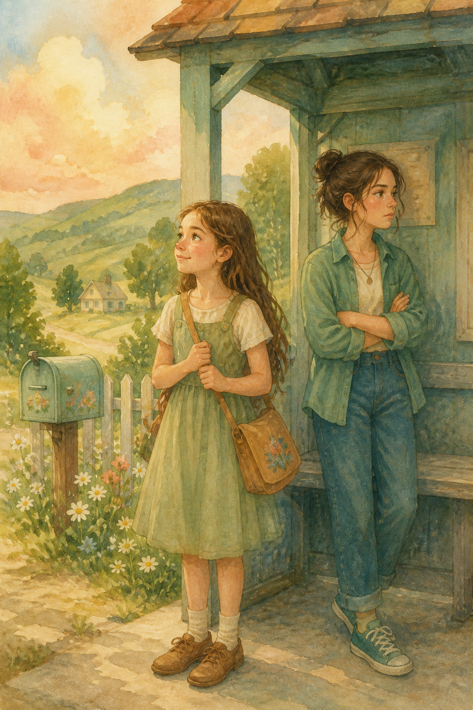

Almost SistersMeg, Rosemina, and a marriage that jumped the gun
Meg always wanted an elder sister. Then Mum and Dad got married — and she got Rosemina. Beautiful. Snappy. And certain Meg would never be her sister.
Two girls, one house
Chapters
Waiting for the Bus
Meg stood in the doorway of her new bedroom and tried to pretend it felt like home.
It didn’t.
The walls were the wrong colour. The window looked out on the wrong trees. Even the air smelled different — like paint and garden soil and someone else’s life. Three weeks ago she had lived in a flat with her Mum, where the kettle sang every morning and nobody snapped at her for breathing too loudly. Then Mum had married Dad. Just like that. One week they were “going out for a bit,” and the next week boxes were being stacked in a hallway Meg had never seen before.
“You’ll love having a sister,” Mum had said, eyes shining. “Rosemina’s a little older than you. Won’t that be wonderful?”
Meg had thought it would be. She had always wanted an elder sister — someone to braid her hair, borrow books from, whisper secrets with after lights-out. She had pictured soft laughs and shared jokes. She had not pictured Rosemina.
Rosemina was beautiful. That part Meg could admit. Tall, neat hair, the sort of face that looked as if it belonged in a painting. But she moved through the house like Meg was a spare chair someone had left in the way. She said “excuse me” without looking. She shut library doors with a soft click that somehow felt louder than a slam.
This morning Mum had poked her head into Meg’s room. “School starts in two days. Why don’t you and Rosemina hop to the market for pencils and bits? You can take the bus together. A little sister trip!”
Sister trip. Meg’s stomach twisted.
Downstairs, Rosemina was already tying her shoes, mouth set in a straight line.
“Do we have to?” she muttered.
“Mum said,” Meg answered carefully.
Rosemina glanced at her — just once — and shrugged. “Fine. But don’t chatter the whole way. It’s embarrassing.”
Meg swallowed the reply she wanted to give. Self-pity rose in her chest like warm water. Why do I have to live here? Why can’t things go back? She pushed the thought down and followed Rosemina out into the middle-of-nowhere quiet of the lane.
The bus stop was a simple post and a patch of shade. Hills rolled away in soft green waves. Birds argued in a hedge. It really was lovely — the sort of place people wrote poems about — and Meg almost said so, then remembered Rosemina’s warning about chattering.
They stood side by side without standing together.
Meg shifted her bag on her shoulder and stared down the empty road, waiting for the bus to arrive.
Not Much Has Changed
After a little while, the bus came, and the two girls hopped into the bus. They sat down on the seats and looked out the window.
“What a lovely view!” exclaimed Meg.
“It’s so beautiful and peaceful!”
“Yes, it’s been like that ever since I was little. Not much has changed here and it’s quite boring,” said Rosemina.
“I don’t think I could ever get bored of it,” said Meg.
“You will — and then you’ll know what I mean,” snapped Rosemina.
Meg was taken aback by her sudden change in attitude. She admired Rosemina and thought she was very beautiful, but she didn’t like how snappy she was.
The two of them didn’t speak a word to each other. After what seemed to take forever, they were finally at the market.
“Can we get some pencils on the way for school? Summer is almost over — school starts in two days,” said Meg.
“Thank goodness! At least I can be alone for a week,” replied Rosemina.
Meg glared at her angrily. Why do I live with this girl? She is such a pest! I do pity myself for having to live with her, thought Meg.
After Meg got her pencils, they went back home quietly. Meg felt very bitter towards Rosemina, and the admiration she had for her an hour ago was gone.
Never Be My Sister
Once they reached their house, they merely ignored each other and walked in opposite directions, facing their backs to each other. Meg soberly went to her room to pack her bag while Rosemina went to the house library to read.
How I wish I didn’t have to live with Meg, she thought as she flipped the page of the book. She is a nice kid — but she’ll never be my sister.
Meanwhile Meg was packing her things for school. I thought it’d be fun to have an elder sister, but really, Rosemina is so snappy. I wish I never met her, she thought.
They both kept out of each other’s way and hardly noticed if they were next to each other. After a long day of chores Meg went to bed wishing she was back at her old house with her Mum and Dad. She tossed and turned all night until she finally fell asleep.
Forced to Love You
When Meg woke up to the chirping of the birds, she rubbed her eyes and got up slowly, and went to freshen up with an open mind (that was at least until she remembered Rosemina was her sister. She wasn’t so open-minded after that).
She went downstairs to have her breakfast, making sure not to sit next to Rosemina. They had a scrumptious breakfast of sandwich, eggs and porridge. She then went to the garden to play with her ball. Unfortunately for her, Rosemina was present in the garden too, painting a picture of the view. Meg edged towards her, looking at the picture she was painting with interest.
“That’s a nice picture you’ve painted,” she said.
“Thanks. Now go away — I need to focus and you’re just being annoying,” replied Rosemina.
“Why do you always like to tease and hurt me? You know how bad and frustrated I feel,” argued Meg.
“Well, do you know how I feel? I feel like I’m forced to love you — and I don’t want to hurt you, but I just can’t help it,” said Rosemina, exasperated.
Meg was shaken. She never thought that Rosemina had a reason to hate her. All this while she had been self-pitying herself for living with her, but now she felt different. She actually admired Rosemina for confronting her.
“I’m sorry I made you feel that way. I never thought you’d feel like that. I always thought of myself and how I felt,” said Meg.
Now it was Rosemina who was taken aback. She never thought that Meg would actually apologise to her — and though she was still a little stiff, something in her face softened, just for a second.
That evening they did not ignore each other quite so hard. In the library, with the door half shut, they whispered about Mum and Dad — the disappearing, the sudden wedding, the way nobody had asked the girls how they felt. For the first time they sounded like a team. They decided, secretly, that tomorrow they would tell the truth.
Jumped the Gun
They planned it out secretly the day before. Now they were sitting at the dining table.
“Mum, Dad, we’ve got something to tell you.”
“Well, whatever could it be?” asked their Mum.
“It’s just that we wanted to tell you how we feel about your marriage,” said Rosemina. “You always left us out of your plans, and kept disappearing — and then you just said you were getting married without even telling us how you met in the first place. It’s like you jumped the gun.”
To be continued…